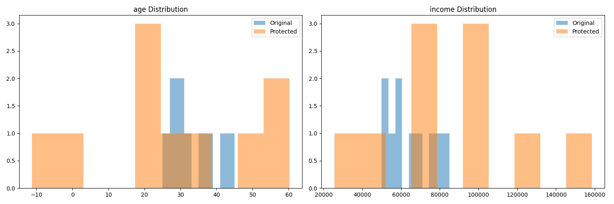

SafeData Privacy-Utility Report
Risk Assessment
- k_anonymity: (np.int64(1), 'Minimum group size: 1, Risky groups: 10')
- linkage_attack: (100.0, 'Linked 10/10 records (100.0%)')
- prosecutor_risk: (np.float64(1.0), 'Prosecutor risk: 1.000 (1/1)')
- journalist_risk: (np.float64(0.1), 'Journalist risk: 0.100000')
Utility Measurement
- age: mean_diff=0.169, corr=-0.163
- income: mean_diff=0.332, corr=0.653
- ML Accuracy: orig=0.667, prot=0.000, loss=0.667
Comparison Plots
